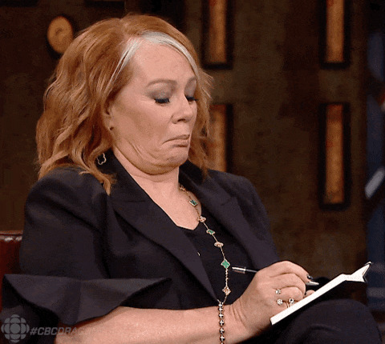

Фритрек и нулевой спринт: Подготовка к работе

ИнтересноЭто было самое начало пути. На этом этапе важно было проникнуться основами и настроиться на учёбу. И, возможно, подумать, как новые знания могут повлиять на ваше будущее.
Нулевой спринт это как внезапное желание начать ходить в спортзал в 12 ночи. Но спортзал по ночам закрыт, а Яндекс.Практикум доступен везде и всегда.